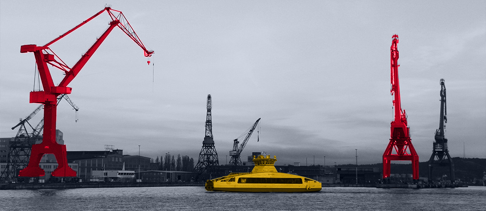

Risk map
Map the top Reflex interfaces and rank them by impact, ownership, test cover, and go-live risk.
Why we're here
LWS Reflex now sits at the centre of real warehouse flow: robots, conveyors, labels, data, handover proof, and client promises. That makes integration work a delivery risk.
We saw current hiring for integration testing, software, DevOps, DBA, and BI roles, plus a Head of Integration signal. Here is where we would help first.
Our read
Your hiring signal says Logistex is scaling software delivery around integrated automation. The hard part is not one adapter or one dashboard. LWS Reflex controls WES/WCS flows across AMRs, conveyors, printers, bagging machines, and client systems. If test coverage lags, handover risk becomes a commercial risk. Warren's AI remit also needs clean event data before models can help live operations.
Where we'd start
Reflex FAQ says existing data can be mapped through the interface highway.
Next stepRank interfaces by failure impact, test cover, owner, and deploy frequency.
Your emulation article says WMS/WCS can connect as if to real MHE.
Next stepUse that base to build contract tests for two high-risk partner flows.
What we'd do
Engagement model: a dedicated squad under your PM for a focused pilot. Team shape: senior people who cover integration, QA, DevOps, and AI-ready data.
Map the top Reflex interfaces and rank them by impact, ownership, test cover, and go-live risk.
Build emulation-ready contract tests for two partner flows before they touch live equipment and client acceptance.
Add logging and alerts around adapter failures, event delays, and throughput bottlenecks so issues show early.
Prepare one event pipeline for anomaly detection or root-cause support in Analytex, with clear data owners.
Who is Elinext
Elinext is a full-cycle software development provider, active since 1997 across global markets. We have around 700 in-house specialists across engineering, QA, DevOps, design, management, and AI/ML. There are no freelancers or subcontractors, so delivery ownership stays clear. For Logistex, the fit is integration-heavy enterprise software, QA, DevOps, and AI-ready data work. Our teams meet ISO 9001 and ISO 27001 for quality and security. Work for Siemens, Broadcom, Volkswagen, TRUMPF, and TUI backs the squad above.
Proof

Elinext built warehouse connectors, parcel orchestration, barcode flows, Android scanning, logging, and monitoring. The work reduced manual label effort and strengthened throughput.
Read the case study
Elinext delivered real-time alarm and status software for straddle carriers and ship-to-shore cranes, using Python, Angular, Electron, and Redis.
Read the case study